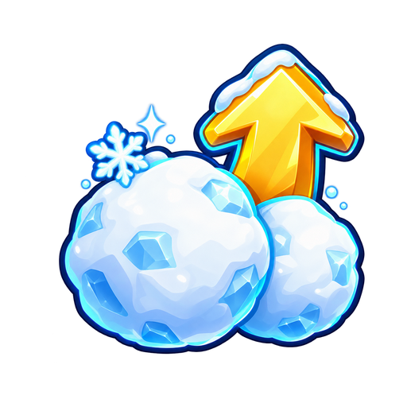
snow rewards
512×512 RGBA · visible padding L/T/R/B 74/55/53/66px
Assigned nodes (13)
S_Center, S_Gain1, S_Gain2, S_Gain3, S_Deep, S_Storm, S_Fresh, S_Rush, S_Third, R_Dice4, R_Dice5, R_Triple, M_Pet1
Generation prompt
Use case: stylized-concept. Asset type: individual transparent PNG upgrade icon for a bright cartoony Roblox snowplow simulator. Make ONE centered glossy chunky cartoon game UI icon, readable at 64 pixels. Bold dark navy contour, crisp icy cyan rim highlights, simple rounded shapes, clean saturated colors, snowy winter accents and restrained highlights. Three-quarter view when appropriate. Genuine transparent background, square canvas, approximately 12 percent clear padding on all sides, object entirely within frame. No words, letters, numbers, price, watermark, border card, square background, checkerboard, scenery or ground plane. Match the polished snowy blue/gold simulator visual language. This is a single standalone asset, not a sheet or collage.
Subject: Two fluffy white snowballs with pale blue facets and a small golden upward arrow indicating increased Snow earnings. A tiny snowflake glint.
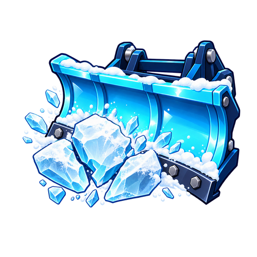
clearing power
512×512 RGBA · visible padding L/T/R/B 45/80/33/98px
Assigned nodes (3)
S_Sharp, S_Heavy, S_Swing
Generation prompt
Use case: stylized-concept. Asset type: individual transparent PNG upgrade icon for a bright cartoony Roblox snowplow simulator. Make ONE centered glossy chunky cartoon game UI icon, readable at 64 pixels. Bold dark navy contour, crisp icy cyan rim highlights, simple rounded shapes, clean saturated colors, snowy winter accents and restrained highlights. Three-quarter view when appropriate. Genuine transparent background, square canvas, approximately 12 percent clear padding on all sides, object entirely within frame. No words, letters, numbers, price, watermark, border card, square background, checkerboard, scenery or ground plane. Match the polished snowy blue/gold simulator visual language. This is a single standalone asset, not a sheet or collage.
Subject: A compact reinforced cyan snowplow blade with dark blue brackets smashing a single pale ice chunk into three big fragments. The blade is a vehicle front attachment with no hand shovel shaft or handle.
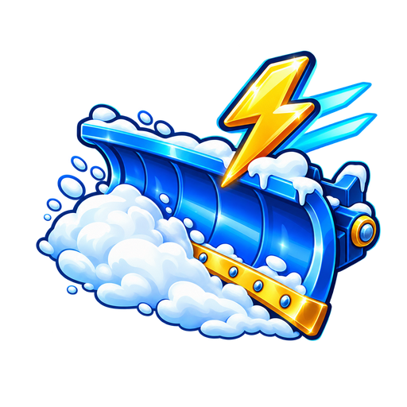
clearing speed
512×512 RGBA · visible padding L/T/R/B 45/63/33/83px
Assigned nodes (2)
S_Quick, S_Turbo
Generation prompt
Use case: stylized-concept. Asset type: individual transparent PNG upgrade icon for a bright cartoony Roblox snowplow simulator. Make ONE centered glossy chunky cartoon game UI icon, readable at 64 pixels. Bold dark navy contour, crisp icy cyan rim highlights, simple rounded shapes, clean saturated colors, snowy winter accents and restrained highlights. Three-quarter view when appropriate. Genuine transparent background, square canvas, approximately 12 percent clear padding on all sides, object entirely within frame. No words, letters, numbers, price, watermark, border card, square background, checkerboard, scenery or ground plane. Match the polished snowy blue/gold simulator visual language. This is a single standalone asset, not a sheet or collage.
Subject: A blue curved snowplow vehicle blade sweeping a white snow puff, with a golden lightning bolt and two short cyan speed streaks. No hand shovel handle or shaft.
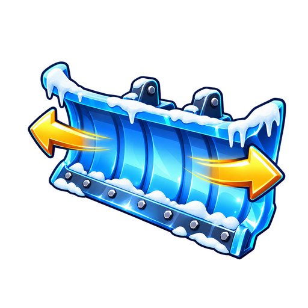
blade width
512×512 RGBA · visible padding L/T/R/B 46/102/36/80px
Assigned nodes (5)
S_Size1, S_Size2, S_Size3, S_Size4, S_Size5
Generation prompt
Use case: stylized-concept. Asset type: individual transparent PNG upgrade icon for a bright cartoony Roblox snowplow simulator. Make ONE centered glossy chunky cartoon game UI icon, readable at 64 pixels. Bold dark navy contour, crisp icy cyan rim highlights, simple rounded shapes, clean saturated colors, snowy winter accents and restrained highlights. Three-quarter view when appropriate. Genuine transparent background, square canvas, approximately 12 percent clear padding on all sides, object entirely within frame. No words, letters, numbers, price, watermark, border card, square background, checkerboard, scenery or ground plane. Match the polished snowy blue/gold simulator visual language. This is a single standalone asset, not a sheet or collage.
Subject: A broad curved icy blue snowplow blade viewed three-quarter from the front, with two clear golden arrows pointing outward left and right to indicate increased blade width. No hand shovel handle or shaft.
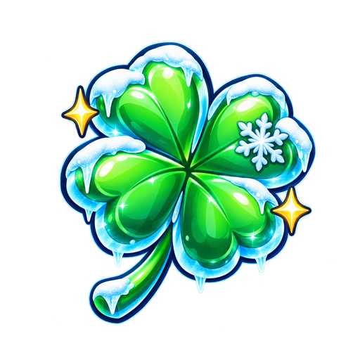
offer luck
512×512 RGBA · visible padding L/T/R/B 84/58/62/50px
Assigned nodes (19)
R_Luck1, R_Luck2, R_Luck3, R_Luck4, R_Luck5, R_Luck6, R_Luck7, R_Luck8, R_Luck9, R_Luck10, R_Luck11, R_Luck12, R_Luck13, R_Luck14, R_Luck15, R_Luck16, R_Luck17, R_Luck18, R_Luck19
Generation prompt
Use case: stylized-concept. Asset type: individual transparent PNG upgrade icon for a bright cartoony Roblox snowplow simulator. Make ONE centered glossy chunky cartoon game UI icon, readable at 64 pixels. Bold dark navy contour, crisp icy cyan rim highlights, simple rounded shapes, clean saturated colors, snowy winter accents and restrained highlights. Three-quarter view when appropriate. Genuine transparent background, square canvas, approximately 12 percent clear padding on all sides, object entirely within frame. No words, letters, numbers, price, watermark, border card, square background, checkerboard, scenery or ground plane. Match the polished snowy blue/gold simulator visual language. This is a single standalone asset, not a sheet or collage.
Subject: One beautiful chunky emerald green four-leaf clover with cyan frosty edges, a small white snowflake accent and two tiny gold sparkles. Lucky but winter-themed.
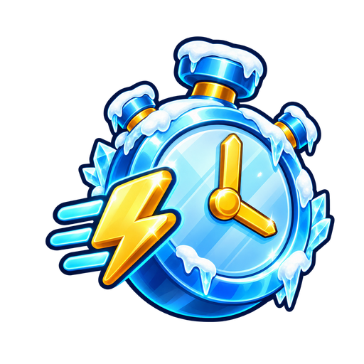
offer cooldown
512×512 RGBA · visible padding L/T/R/B 63/51/41/59px
Assigned nodes (4)
R_Dice1, R_Dice2, R_Dice3, R_Hyper
Generation prompt
Use case: stylized-concept. Asset type: individual transparent PNG upgrade icon for a bright cartoony Roblox snowplow simulator. Make ONE centered glossy chunky cartoon game UI icon, readable at 64 pixels. Bold dark navy contour, crisp icy cyan rim highlights, simple rounded shapes, clean saturated colors, snowy winter accents and restrained highlights. Three-quarter view when appropriate. Genuine transparent background, square canvas, approximately 12 percent clear padding on all sides, object entirely within frame. No words, letters, numbers, price, watermark, border card, square background, checkerboard, scenery or ground plane. Match the polished snowy blue/gold simulator visual language. This is a single standalone asset, not a sheet or collage.
Subject: A chunky icy-blue stopwatch with simple golden clock hands and a small golden lightning bolt with short cyan speed streaks, showing faster part offers. No clock numerals.
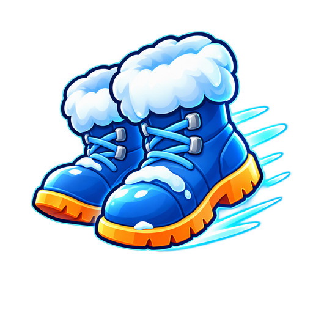
walk speed
512×512 RGBA · visible padding L/T/R/B 50/51/35/99px
Assigned nodes (10)
M_Center, M_Walk1, M_Walk2, M_Sprint, M_Expansion8, M_Expansion11, M_Expansion14, M_Expansion17, M_Expansion20, M_PortalBoots
Generation prompt
Use case: stylized-concept. Asset type: individual transparent PNG upgrade icon for a bright cartoony Roblox snowplow simulator. Make ONE centered glossy chunky cartoon game UI icon, readable at 64 pixels. Bold dark navy contour, crisp icy cyan rim highlights, simple rounded shapes, clean saturated colors, snowy winter accents and restrained highlights. Three-quarter view when appropriate. Genuine transparent background, square canvas, approximately 12 percent clear padding on all sides, object entirely within frame. No words, letters, numbers, price, watermark, border card, square background, checkerboard, scenery or ground plane. Match the polished snowy blue/gold simulator visual language. This is a single standalone asset, not a sheet or collage.
Subject: A pair of warm blue winter boots with white fur cuffs, orange soles and short cyan motion streaks to indicate faster walking. Rounded friendly shapes.
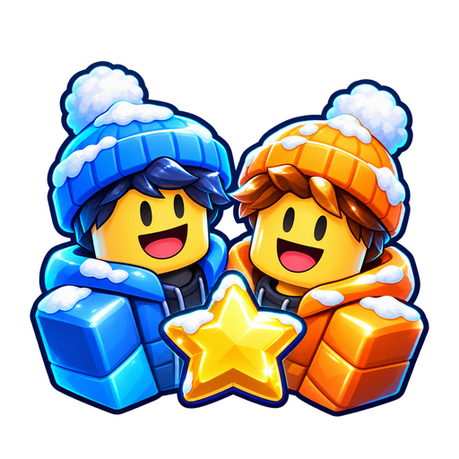
friend boost
512×512 RGBA · visible padding L/T/R/B 33/68/33/47px
Assigned nodes (5)
M_Friend1, M_Friend2, M_Squad, M_Expansion9, M_Expansion18
Generation prompt
Use case: stylized-concept. Asset type: individual transparent PNG upgrade icon for a bright cartoony Roblox snowplow simulator. Make ONE centered glossy chunky cartoon game UI icon, readable at 64 pixels. Bold dark navy contour, crisp icy cyan rim highlights, simple rounded shapes, clean saturated colors, snowy winter accents and restrained highlights. Three-quarter view when appropriate. Genuine transparent background, square canvas, approximately 12 percent clear padding on all sides, object entirely within frame. No words, letters, numbers, price, watermark, border card, square background, checkerboard, scenery or ground plane. Match the polished snowy blue/gold simulator visual language. This is a single standalone asset, not a sheet or collage.
Subject: Two cheerful blocky Roblox-style friend busts wearing blue and orange winter hats, joined by one small golden star between them. Friendly simple faces and rounded chunky shapes.
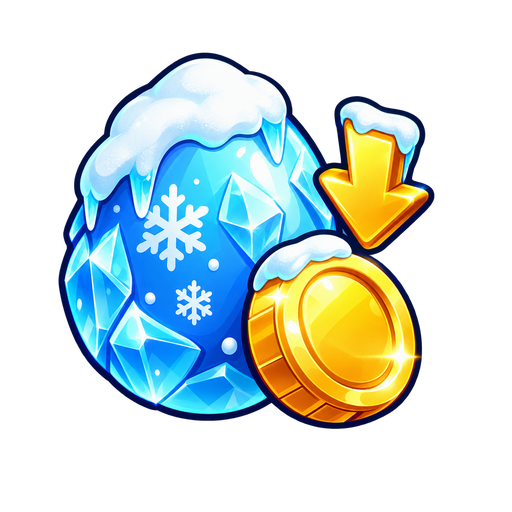
egg discount
512×512 RGBA · visible padding L/T/R/B 58/52/77/83px
Assigned nodes (8)
M_Egg1, M_Egg2, M_Egg3, M_Egg4, M_Expansion3, M_Expansion6, M_Expansion12, M_Expansion15
Generation prompt
Use case: stylized-concept. Asset type: individual transparent PNG upgrade icon for a bright cartoony Roblox snowplow simulator. Make ONE centered glossy chunky cartoon game UI icon, readable at 64 pixels. Bold dark navy contour, crisp icy cyan rim highlights, simple rounded shapes, clean saturated colors, snowy winter accents and restrained highlights. Three-quarter view when appropriate. Genuine transparent background, square canvas, approximately 12 percent clear padding on all sides, object entirely within frame. No words, letters, numbers, price, watermark, border card, square background, checkerboard, scenery or ground plane. Match the polished snowy blue/gold simulator visual language. This is a single standalone asset, not a sheet or collage.
Subject: One cute icy blue egg with a snowy cap next to a golden coin and a small bold downward golden arrow indicating a cheaper egg. No currency sign or writing.
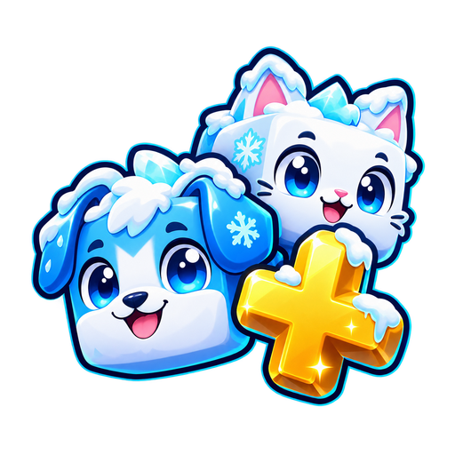
pet slots
512×512 RGBA · visible padding L/T/R/B 35/52/33/55px
Assigned nodes (2)
M_Equip1, M_Equip2
Generation prompt
Use case: stylized-concept. Asset type: individual transparent PNG upgrade icon for a bright cartoony Roblox snowplow simulator. Make ONE centered glossy chunky cartoon game UI icon, readable at 64 pixels. Bold dark navy contour, crisp icy cyan rim highlights, simple rounded shapes, clean saturated colors, snowy winter accents and restrained highlights. Three-quarter view when appropriate. Genuine transparent background, square canvas, approximately 12 percent clear padding on all sides, object entirely within frame. No words, letters, numbers, price, watermark, border card, square background, checkerboard, scenery or ground plane. Match the polished snowy blue/gold simulator visual language. This is a single standalone asset, not a sheet or collage.
Subject: Two cute rounded cube pet heads, a snowy blue puppy and a white arctic cat, with a bold golden plus symbol beside them indicating an extra equipped pet. Simple happy faces.
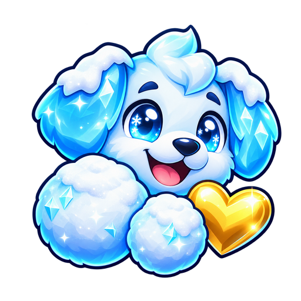
pet boost
512×512 RGBA · visible padding L/T/R/B 53/42/33/39px
Assigned nodes (9)
M_Expansion1, M_Expansion4, M_Expansion7, M_Expansion10, M_Expansion13, M_Expansion16, M_Expansion19, M_Expansion21, M_Feast
Generation prompt
Use case: stylized-concept. Asset type: individual transparent PNG upgrade icon for a bright cartoony Roblox snowplow simulator. Make ONE centered glossy chunky cartoon game UI icon, readable at 64 pixels. Bold dark navy contour, crisp icy cyan rim highlights, simple rounded shapes, clean saturated colors, snowy winter accents and restrained highlights. Three-quarter view when appropriate. Genuine transparent background, square canvas, approximately 12 percent clear padding on all sides, object entirely within frame. No words, letters, numbers, price, watermark, border card, square background, checkerboard, scenery or ground plane. Match the polished snowy blue/gold simulator visual language. This is a single standalone asset, not a sheet or collage.
Subject: One cute chunky icy-blue pet puppy head with two fluffy snowballs and a small golden heart, representing a stronger pet Snow bonus. Simple happy face.
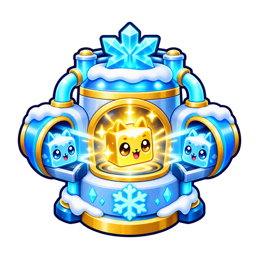
pet fuser
512×512 RGBA · visible padding L/T/R/B 35/43/35/43px
Assigned nodes (1)
M_Expansion2
Generation prompt
Use case: stylized-concept. Asset type: individual transparent PNG upgrade icon for a bright cartoony Roblox snowplow simulator. Make ONE centered glossy chunky cartoon game UI icon, readable at 64 pixels. Bold dark navy contour, crisp icy cyan rim highlights, simple rounded shapes, clean saturated colors, snowy winter accents and restrained highlights. Three-quarter view when appropriate. Genuine transparent background, square canvas, approximately 12 percent clear padding on all sides, object entirely within frame. No words, letters, numbers, price, watermark, border card, square background, checkerboard, scenery or ground plane. Match the polished snowy blue/gold simulator visual language. This is a single standalone asset, not a sheet or collage.
Subject: A compact cyan winter laboratory pet-fusion machine: two small cute blue cube pet heads enter rounded side sockets, and a single golden cute pet head emerges from a central round window with a gold sparkle. Big simple readable shapes.
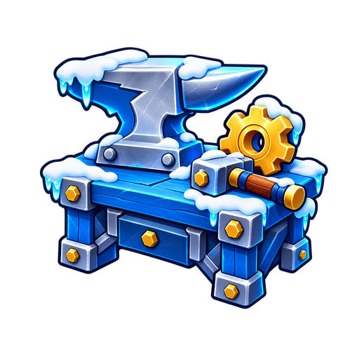
crafting machine
512×512 RGBA · visible padding L/T/R/B 56/67/44/71px
Assigned nodes (1)
M_Expansion5
Generation prompt
Use case: stylized-concept. Asset type: individual transparent PNG upgrade icon for a bright cartoony Roblox snowplow simulator. Make ONE centered glossy chunky cartoon game UI icon, readable at 64 pixels. Bold dark navy contour, crisp icy cyan rim highlights, simple rounded shapes, clean saturated colors, snowy winter accents and restrained highlights. Three-quarter view when appropriate. Genuine transparent background, square canvas, approximately 12 percent clear padding on all sides, object entirely within frame. No words, letters, numbers, price, watermark, border card, square background, checkerboard, scenery or ground plane. Match the polished snowy blue/gold simulator visual language. This is a single standalone asset, not a sheet or collage.
Subject: A compact blue workshop crafting bench with a silver-blue anvil, one golden gear and a short handled workshop hammer resting on the bench. Snow caps on corners. Rounded chunky toy-like mechanical shapes.
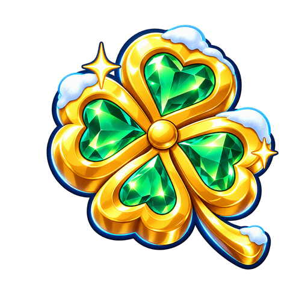
golden offer luck
512×512 RGBA · visible padding L/T/R/B 77/41/48/63px
Assigned nodes (6)
R_Gold1, R_Gold2, R_Gold3, R_Gold4, R_Gold5, R_Gold6
Generation prompt
Use case: stylized-concept. Asset type: individual transparent PNG upgrade icon for a bright cartoony Roblox snowplow simulator. Make ONE centered glossy chunky cartoon game UI icon, readable at 64 pixels. Bold dark navy contour, crisp icy cyan rim highlights, simple rounded shapes, clean saturated colors, snowy winter accents and restrained highlights. Three-quarter view when appropriate. Genuine transparent background, square canvas, approximately 12 percent clear padding on all sides, object entirely within frame. No words, letters, numbers, price, watermark, border card, square background, checkerboard, scenery or ground plane. Match the polished snowy blue/gold simulator visual language. This is a single standalone asset, not a sheet or collage.
Subject: One chunky metallic gold four-leaf clover with emerald inset details, tiny snowy-white cap highlights and two star sparkles. An especially lucky golden offer.
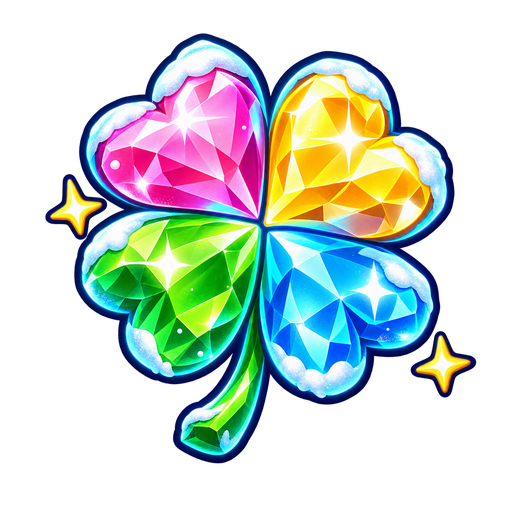
rainbow offer luck
512×512 RGBA · visible padding L/T/R/B 45/33/35/48px
Assigned nodes (7)
R_Rain1, R_Rain2, R_Rain3, R_Rain4, R_Rain5, R_Rain6, W2_RainbowLuck
Generation prompt
Use case: stylized-concept. Asset type: individual transparent PNG upgrade icon for a bright cartoony Roblox snowplow simulator. Make ONE centered glossy chunky cartoon game UI icon, readable at 64 pixels. Bold dark navy contour, crisp icy cyan rim highlights, simple rounded shapes, clean saturated colors, snowy winter accents and restrained highlights. Three-quarter view when appropriate. Genuine transparent background, square canvas, approximately 12 percent clear padding on all sides, object entirely within frame. No words, letters, numbers, price, watermark, border card, square background, checkerboard, scenery or ground plane. Match the polished snowy blue/gold simulator visual language. This is a single standalone asset, not a sheet or collage.
Subject: One chunky four-leaf clover made of a luminous but clearly colored rainbow crystal: pink, gold, green and cyan leaves, dark navy contour and frosty white highlights. Two tiny stars. Bright rainbow luck.
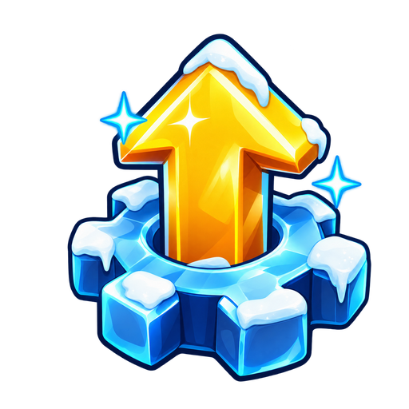
upgrades menu
512×512 RGBA · visible padding L/T/R/B 84/42/47/34px
Assigned nodes (0)
Menu / standalone asset
Generation prompt
Use case: stylized-concept. Asset type: individual transparent PNG upgrade icon for a bright cartoony Roblox snowplow simulator. Make ONE centered glossy chunky cartoon game UI icon, readable at 64 pixels. Bold dark navy contour, crisp icy cyan rim highlights, simple rounded shapes, clean saturated colors, snowy winter accents and restrained highlights. Three-quarter view when appropriate. Genuine transparent background, square canvas, approximately 12 percent clear padding on all sides, object entirely within frame. No words, letters, numbers, price, watermark, border card, square background, checkerboard, scenery or ground plane. Match the polished snowy blue/gold simulator visual language. This is a single standalone asset, not a sheet or collage.
Subject: One large bold golden upward arrow emerging from a chunky icy-blue gear, with small white snow caps and two cyan star glints. The recognizable main UPGRADES menu symbol, without any text.
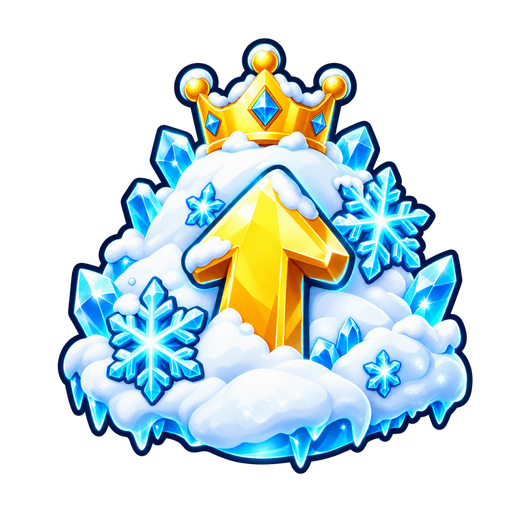
snow rewards elite
512×512 RGBA · visible padding L/T/R/B 57/38/39/38px
Assigned nodes (11)
S_Blizzard, S_Avalanche, S_Glacier, S_FrostCore, W2_BlossomBreeze, W2_SugarRush, W2_TideSurge, W2_ToyChest, W2_TickTockSnow, W2_CloudBurst, W2_StarBurst
Generation prompt
Use case: stylized-concept. Asset type: individual transparent PNG upgrade icon for a bright cartoony Roblox snowplow simulator. Make ONE centered glossy chunky cartoon game UI icon, readable at 64 pixels. Bold dark navy contour, crisp icy cyan rim highlights, simple rounded shapes, clean saturated colors, snowy winter accents and restrained highlights. Three-quarter view when appropriate. Genuine transparent background, square canvas, approximately 12 percent clear padding on all sides, object entirely within frame. No words, letters, numbers, price, watermark, border card, square background, checkerboard, scenery or ground plane. Match the polished snowy blue/gold simulator visual language. This is a single standalone asset, not a sheet or collage.
Subject: A tall fluffy white snow mound with icy-blue crystalline snowflakes and a bold golden upward arrow, one small golden crown at the top. Powerful late-game Snow rewards, still a simple readable silhouette.
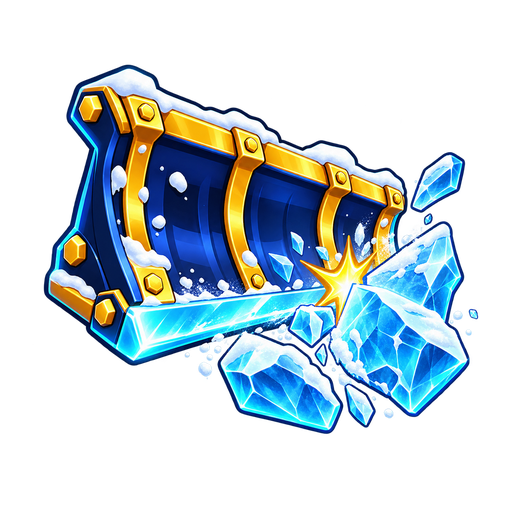
clearing power elite
512×512 RGBA · visible padding L/T/R/B 43/64/33/78px
Assigned nodes (11)
S_Crush, S_Titan, S_Meteor, S_Glacial, W2_PetalStrike, W2_CandyCrush, W2_CoralCrusher, W2_BlockBuster, W2_GearGrinder, W2_ThunderStrike, W2_MeteorStrike
Generation prompt
Use case: stylized-concept. Asset type: individual transparent PNG upgrade icon for a bright cartoony Roblox snowplow simulator. Make ONE centered glossy chunky cartoon game UI icon, readable at 64 pixels. Bold dark navy contour, crisp icy cyan rim highlights, simple rounded shapes, clean saturated colors, snowy winter accents and restrained highlights. Three-quarter view when appropriate. Genuine transparent background, square canvas, approximately 12 percent clear padding on all sides, object entirely within frame. No words, letters, numbers, price, watermark, border card, square background, checkerboard, scenery or ground plane. Match the polished snowy blue/gold simulator visual language. This is a single standalone asset, not a sheet or collage.
Subject: A powerful chunky dark blue reinforced snowplow blade with gold metal braces and an icy cyan cutting edge breaking a large ice crystal, three big fragments and one gold impact star. No shovel handle or shaft.
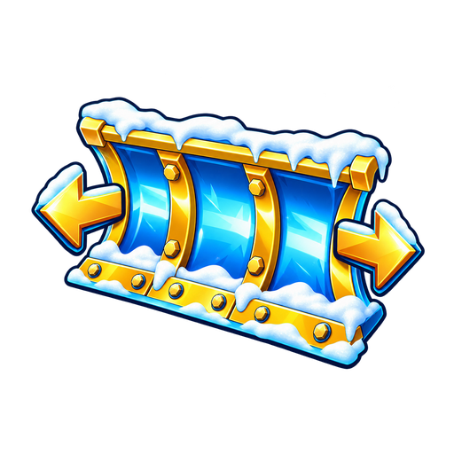
blade width elite
512×512 RGBA · visible padding L/T/R/B 35/109/33/95px
Assigned nodes (12)
S_Size6, S_Size7, S_Size8, S_Size9, S_Size10, W2_KoiCompanions, W2_SweetFriends, W2_TidalReach, W2_GiantToys, W2_SpringReach, W2_SkyReach, W2_GalaxyReach
Generation prompt
Use case: stylized-concept. Asset type: individual transparent PNG upgrade icon for a bright cartoony Roblox snowplow simulator. Make ONE centered glossy chunky cartoon game UI icon, readable at 64 pixels. Bold dark navy contour, crisp icy cyan rim highlights, simple rounded shapes, clean saturated colors, snowy winter accents and restrained highlights. Three-quarter view when appropriate. Genuine transparent background, square canvas, approximately 12 percent clear padding on all sides, object entirely within frame. No words, letters, numbers, price, watermark, border card, square background, checkerboard, scenery or ground plane. Match the polished snowy blue/gold simulator visual language. This is a single standalone asset, not a sheet or collage.
Subject: A broad premium snowplow vehicle blade with gold braces, bright icy-blue face and snow-capped top, with two bold golden outward arrows pointing left and right. Wide strong silhouette, no shovel handle or shaft.
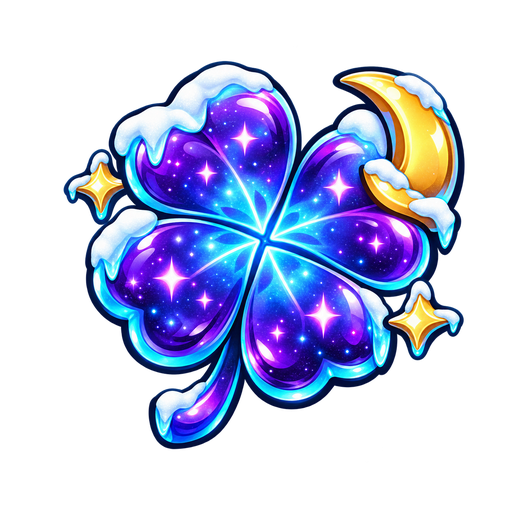
cosmic offer luck
512×512 RGBA · visible padding L/T/R/B 63/61/47/62px
Assigned nodes (9)
R_Luck20, R_Luck21, R_Luck22, W2_KoiFortune, W2_LuckyLollipop, W2_PearlLuck, W2_LuckyToyDice, W2_LuckyClockwork, W2_CosmicLuck
Generation prompt
Use case: stylized-concept. Asset type: individual transparent PNG upgrade icon for a bright cartoony Roblox snowplow simulator. Make ONE centered glossy chunky cartoon game UI icon, readable at 64 pixels. Bold dark navy contour, crisp icy cyan rim highlights, simple rounded shapes, clean saturated colors, snowy winter accents and restrained highlights. Three-quarter view when appropriate. Genuine transparent background, square canvas, approximately 12 percent clear padding on all sides, object entirely within frame. No words, letters, numbers, price, watermark, border card, square background, checkerboard, scenery or ground plane. Match the polished snowy blue/gold simulator visual language. This is a single standalone asset, not a sheet or collage.
Subject: A chunky purple and cyan cosmic four-leaf clover with a small gold crescent moon, two tiny stars and snowy white highlights. Strong late-game cosmic luck, simple bold silhouette.